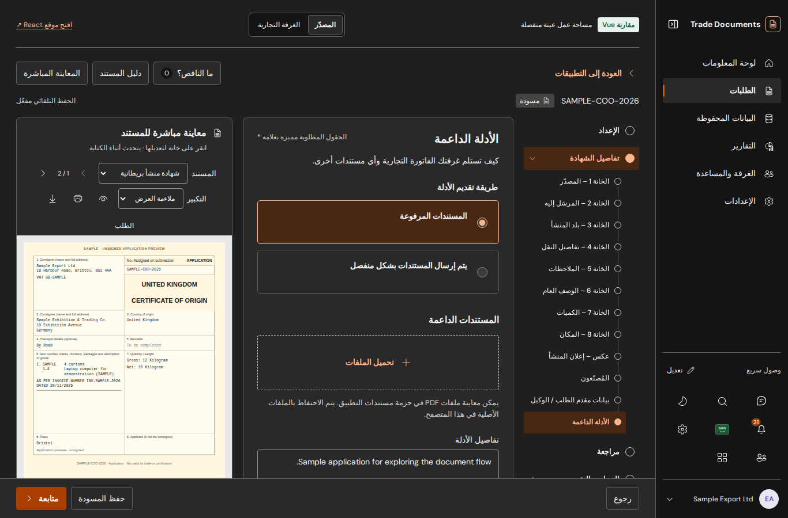
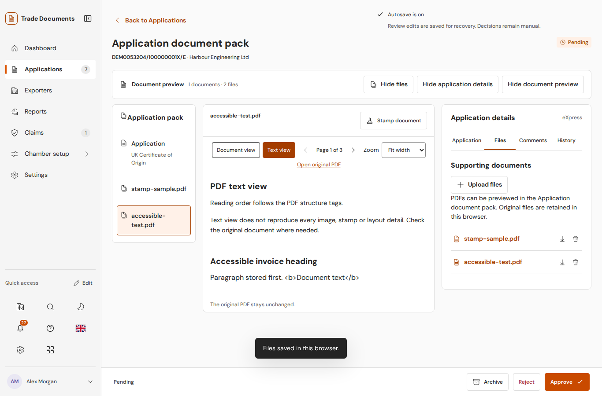
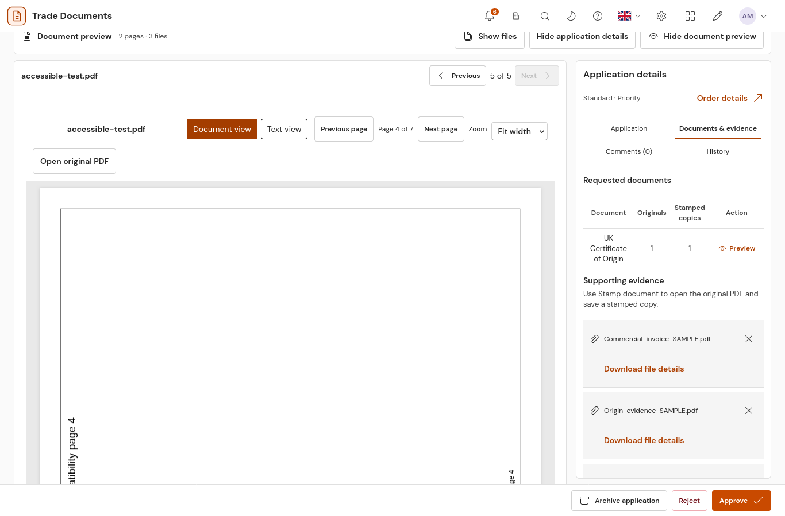
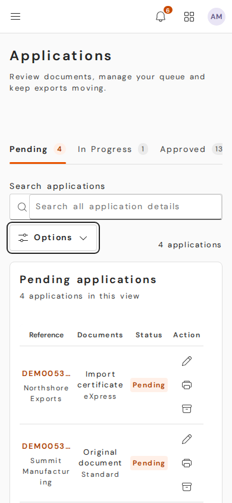
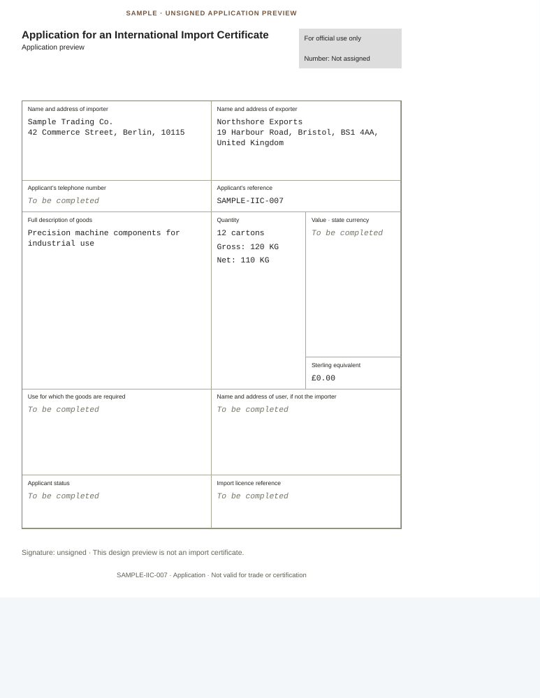
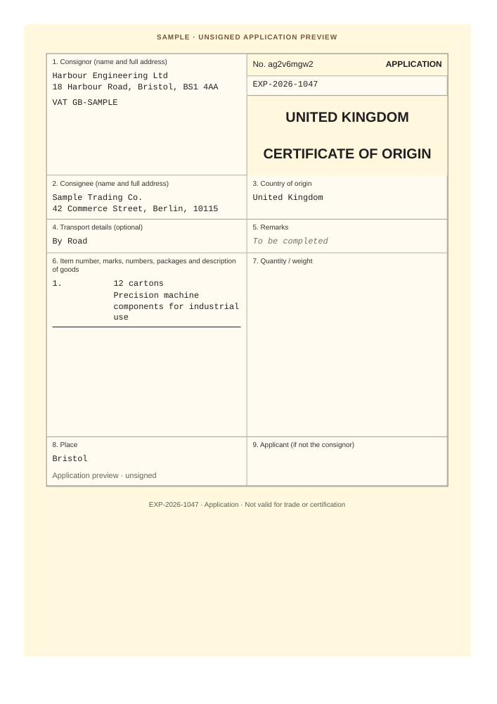

Checks, fixes and the final review pack
This review covers both Exporter and Chamber workspaces in React and Vue. It combines repeatable cloud checks with inspected screenshots and PDF output. Human, device and printer checks are listed separately so that their status is clear.
467 application checks and 78 model tests pass across the recorded cloud runs. The reviewer tasks below have not been completed by people. This is not a declaration of WCAG 2.2 conformance.
What changed
- Vue explicitly saves a record before closing its dialog, protecting new signatures from immediate reloads.
- Swedish Yes/No and Swedish, Dutch and Portuguese number abbreviations are corrected.
- PDF Text view supports WebKit streams that lack async iteration, in both React and Vue.
- The Vue document preview avoids synchronous resize-observer updates.
- The React mobile Reference heading no longer overlaps its full label.
- Navigation-only skip links are excluded from Vue printouts.
- Handover notes now describe six languages, retained uploaded files, the PDF Text view, typed/drawn signatures and the current browser-only data model.
Review by workflow
1. Find and open a record
Queues, search, Options, return navigation, keyboard menus and translated narrow layouts are covered by cloud checks.
2. Complete an application
All eight Vue document types, form sections, goods records, review, checkout, six languages and the retained live preview are exercised. Real-user timing and error-rate comparisons remain open.
3. Review PDFs and stamp
Tagged text, form values, no-text pages, rotations, crop boxes, mixed sizes, malformed files and separate stamped output have dedicated checks. Actual office documents and physical printing need the review tasks below.
4. Access and understand
Keyboard semantics, automatic accessibility scans, increased text spacing, supported forced-colour checks and actual Chromium zoom are covered. Native screen readers, actual Safari/iPhone and fluent-speaker approval remain required.
Cloud results
| Cloud engine | Core cases | PDF and input cases | Result |
|---|---|---|---|
| Chromium | 183 / 183 | 10 / 10 | Passed |
| Firefox | 129 / 129 | 8 / 8 | Passed |
| WebKit | 129 / 129 | 8 / 8 | Passed |
Core cases cover navigation, queues, keyboard dialogs, signature creation and retention, Vue application steps, translated layouts and PDF reading. Chromium adds 54 actual browser-zoom cases at 200% and 400%. Supplemental cases cover mixed-page PDFs, stamping, malformed files, text spacing and keyboard controls; Chromium also captures two print outputs.
Core cloud run · Editor and print follow-up · Report checks · PDF and input cloud run · Detailed case results
During testing, WebKit sometimes reported the new viewport width before repainting its CSS media queries. The follow-up waits for a paint, then applies the same overflow assertions; no failed checks were disabled. The temporary print-layout experiment was removed.
Evidence previews












Sample files for the physical print check
These are synthetic test documents, not valid trade certificates. The stamped copies preserve all seven original pages, rotations, crop boxes and the test form value.
- Seven-page original test PDF · React stamped copy · Vue stamped copy
- React generated print sample · Vue generated print sample
Ready-to-use reviewer tasks
Download the checklist and record the actual result, device, browser version, reviewer and date. Every human task begins as “Not run”; automated results do not fill these fields.
Download reviewer checklistDownload language review sheet
AT01 · Keyboard — Exporter
Task: Open a COO draft; choose destination and documents; use What’s missing; correct errors; copy a goods item; save and reopen.
Expected: All controls work with Tab, Shift+Tab, Enter, Space and arrow keys. Focus is visible, logical and never trapped. Typed values survive saving.
Who or what is needed: NVDA with Firefox or Chrome on Windows
Not yet run by a human reviewer.
AT02 · Keyboard — Chamber
Task: Filter a queue; open an application; inspect Application, Files, Comments and History; return to the queue.
Expected: Selected queue and search survive return. Dialogs restore focus. No pinned bar hides the focused control.
Who or what is needed: NVDA with Firefox or Chrome on Windows
Not yet run by a human reviewer.
AT03 · Screen reader — Both
Task: Read field names, required state and errors; change language; open a dialog; navigate PDF Text view headings and page buttons.
Expected: Names, roles, states, reading order and updates are understandable without seeing the screen. File content is not announced as translated interface text.
Who or what is needed: NVDA and VoiceOver; experienced assistive-technology user
Not yet run by a human reviewer.
AT04 · Decisions — Chamber
Task: Approve an eligible sample; reject another with a reason; inspect the resulting queues, comments and handling times.
Expected: The intended record changes once; the decision and reason are retained; locked records remain protected. No automatic approval from merely opening evidence.
Who or what is needed: Chamber processing officer
Not yet run by a human reviewer.
AT05 · PDF — Both
Task: Upload a real scanned PDF, office-generated invoice, form PDF and rotated or mixed-size document from your usual software.
Expected: Every page is visible or a clear fallback is provided. Originals remain downloadable. Text view warns when text or reading-order information is missing.
Who or what is needed: Chamber officer using representative non-sensitive files
Not yet run by a human reviewer.
AT06 · Stamping — Chamber
Task: Place a certification stamp and QR stamp, change page and size, save, reopen and print.
Expected: Stamp positions and page count survive download and reopening. Original is unchanged. QR contains the expected sample reference.
Who or what is needed: Chamber officer; Acrobat and operating-system reader
Not yet run by a human reviewer.
AT07 · Physical print — Both
Task: Print COO front/reverse, EUR1 and stamped mixed-page PDF at Actual size and the intended printer settings.
Expected: No edges, reference numbers, goods or stamp are clipped. Orientation, page order and duplex sides match the preview.
Who or what is needed: Representative office printer and paper stock
Not yet run by a human reviewer.
AT08 · Devices — Both
Task: Repeat queue, editor, PDF and signature tasks on actual iPhone/Safari, Android/Chrome and desktop Safari; test portrait and landscape.
Expected: Menus stay on screen, touch controls work, uploads open and forms remain usable without unwanted page-wide scrolling.
Who or what is needed: Actual devices; record OS and browser versions
Not yet run by a human reviewer.
AT09 · Zoom — Both
Task: Use browser 200% and 400%, text-only enlargement, high contrast and increased text spacing; inspect errors and open dialogs.
Expected: Content remains available, labels do not overlap, controls can be reached and focus is not covered. Local two-dimensional document scrolling is understandable.
Who or what is needed: Target desktop browsers; record settings
Not yet run by a human reviewer.
AT10 · Languages — Both
Task: Complete a short application and review task in each of English, Dutch, Estonian, Arabic, Swedish and Portuguese.
Expected: Business terms, grammar, error instructions, dates and plural counts are natural; Arabic direction is appropriate. Entered data and original artwork stay unchanged.
Who or what is needed: Fluent speakers; use language-review.csv
Not yet run by a human reviewer.
AT11 · Usability — Chamber
Task: With 50+ realistic records, locate a priority case, identify ownership/payment, inspect evidence, decide and return to the same queue. Repeat the same tasks on the original service.
Expected: Record task times, wrong-record selections, errors and lost queue positions. Only claim improvement after comparable results and officer feedback.
Who or what is needed: Experienced officer and a user with access needs
Not yet run by a human reviewer.
AT12 · Retention — Both
Task: Save a record and signature; reload immediately; close and reopen the browser. Test a separate browser/profile.
Expected: Changes remain in the original browser. Separate profiles do not share data; explain this clearly during the demonstration.
Who or what is needed: Reviewer using sample data only
Not yet run by a human reviewer.
Acceptance and remaining limits
- Resolve any blocking keyboard, data-loss, wrong-record or print-clipping issue before operational acceptance.
- Have a Chamber officer confirm document content, decision rules, official layouts and stamp placement against real requirements.
- Have fluent speakers review complete tasks in all six languages. The language sheet is a starting glossary, not a complete linguistic certification.
- Have an experienced accessibility reviewer complete screen-reader and task-based testing. A clean automated scan does not establish WCAG 2.2 AA conformance.
- Generated/stamped PDF tagging and reading order need separate review. A readable on-screen view does not make the downloaded PDF PDF/UA compliant.
- Scanned PDFs need an accessible source or checked transcript. OCR and automatic PDF remediation are not implemented.
Handover
The current sites remain public, static comparison prototypes. Records and files stay in the browser, with separate React/Vue stores. No shared login, database, payment service or official certification is included. A production service is a separate phase, consistent with the agreed browser-only storage choice.
Sources: W3C conformance evaluation; Playwright browser coverage. The supplied tasks are not a certification report.